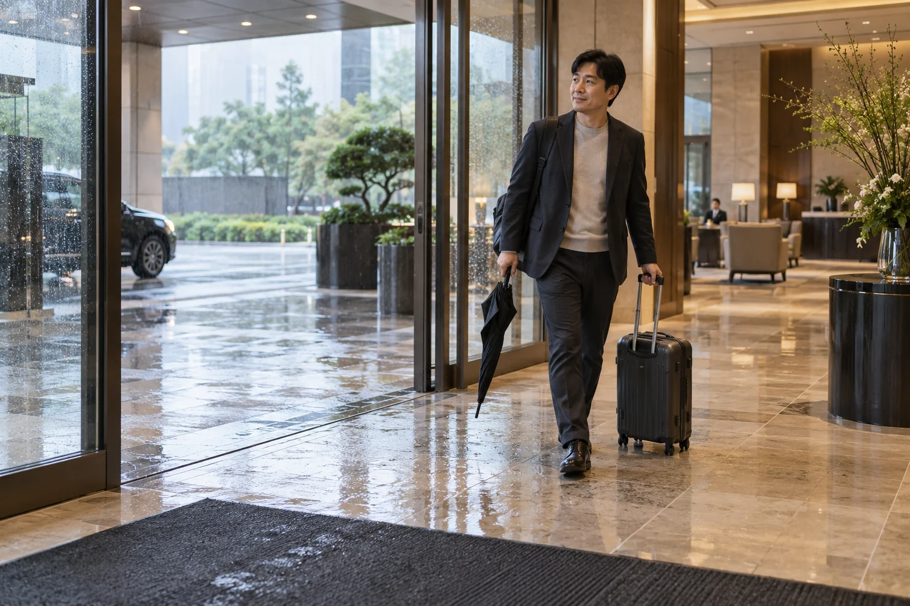
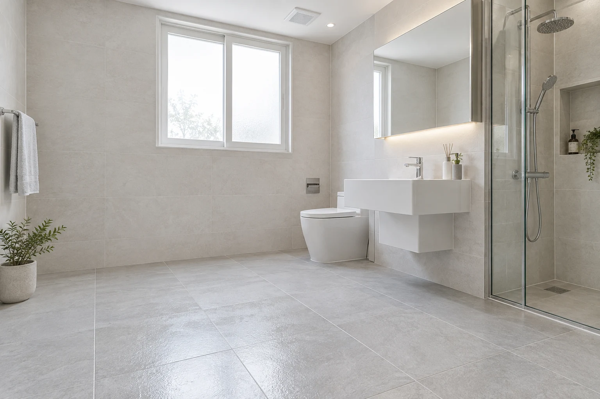

일하는 주방, 손님을 맞는 호텔, 많은 사람이 오가는 시설, 가족의 욕실. 시공을 선택할 때 중요한 내용부터 소개합니다.
뜨거운 음식과 식기를 옮기는 직원의 미끄러짐을 줄이는 시공.

젖은 로비와 수영장 통로를 걷는 고객을 위한 미끄럼방지.
직원과 방문객이 오가는 출입구·공용시설의 미끄러움 개선.

욕실 전체를 바꾸기 전에, 우리 집 타일의 샘플 시공으로 선택하는 방법.
사진은 공간과 작업을 설명하기 위한 브랜드 이미지입니다.